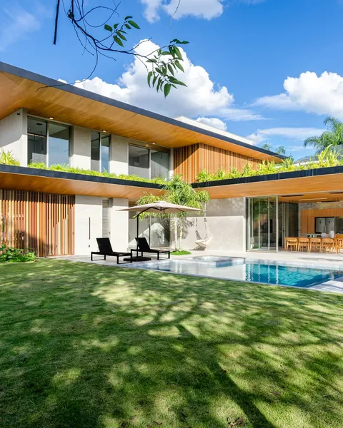
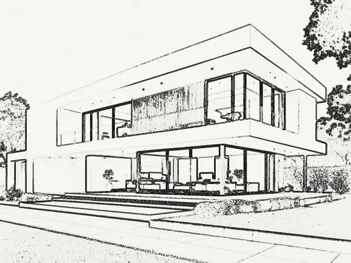
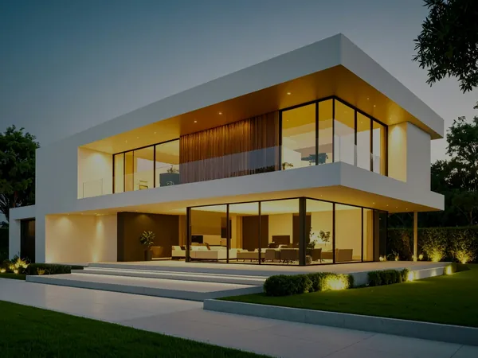
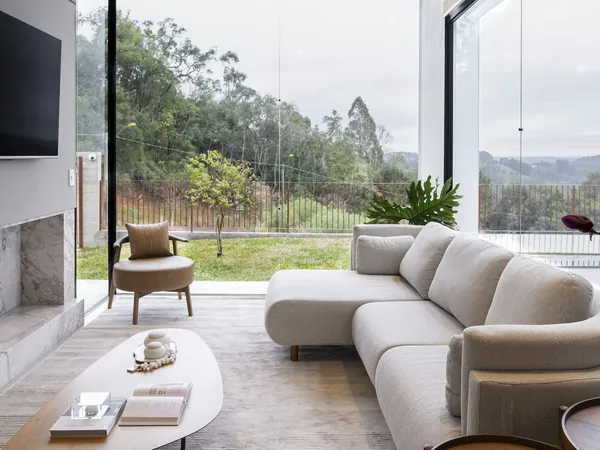
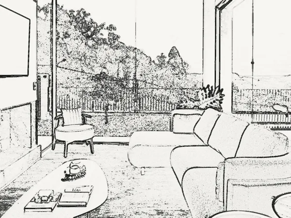

Casa Jardim
Cena presa: enquanto a pessoa rola, a seção fica parada e o desenho evolui. Croqui → estrutura → materiais → jardim → noite. Altura --h:280 = 2,8 telas.
Altura: 6,60 m
<section data-cena style="--h:280"><div class="palco"> … </div></section>
<path class="t" pathLength="1" d="…" data-a="traco" data-de=".08" data-ate=".3"/> ← linha que se desenha
<rect … data-a="surge" data-de=".55" data-ate=".65"/> ← aparece subindo
<rect … data-a="acende" data-de=".88" data-ate="1" data-max=".9"/> ← luz / noite
<li data-etapa=".3,.55">Fechamento</li> ← legenda que acompanha
<span data-a="conta" data-valor="6.6" data-casas="2" data-de="0" data-ate=".5">6,60</span>Bloco normal (não prende o scroll). A foto real corre por cima do desenho em linhas conforme ele sobe na tela. O desenho sai da própria foto do cliente com ferramentas/esboco.py.


python3 kit/ferramentas/esboco.py foto.jpg assets/img casa --proporcao 4:3
<figure class="esboco" data-passagem>
<img src="casa-esboco-600.webp" alt="">
<img class="foto-real" src="casa-600.webp" alt="…" data-a="cortina" data-de=".15" data-ate=".85">
<span class="linha-cortina" aria-hidden="true"></span>
</figure>O scroll vertical vira movimento horizontal; cada foto abre como um corte.

Casa Jardim

Casa de praia

Reforma

Interiores
<section data-galeria><div class="palco-g">
<div data-trilho> <article class="card" data-card><div class="foto"><img …></div>…</article> … </div>
</div></section>Arrastar com mouse, toque ou setas do teclado. Funciona com duas fotos (reforma, estética, limpeza, paisagismo) ou com projeto × obra pronta, usando o esboço.

Projeto<div class="comparador" data-comparador data-rotulo="mostrando o depois">
<div class="lado antes"><img …></div><div class="lado depois"><img …></div>
<div class="divisor" aria-hidden="true"><span>⟷</span></div>
<input type="range" min="0" max="100" value="50" aria-label="Comparar antes e depois">
</div>Cada peça cai e assenta (cai), gira para o lugar (gira) ou nasce do chão (cresce). O contador soma as etapas já começadas.
3 de 3 peças
<g data-a="cai" data-de=".1" data-ate=".3"> … </g>
<b data-contador>3</b> de 3 peças